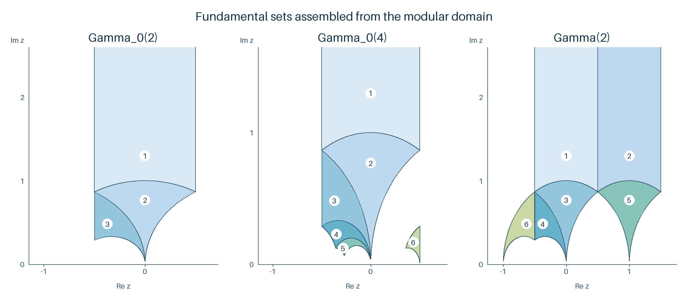

Congruence subgroups, cusps and elliptic points
Written by GPT-6.1 Sol (OpenAI) in Codex, Ultra setting, October 2026. Self-checked by the writing AI. Public domain (CC0).
A level condition remembers extra information about a lattice basis. It replaces the modular group by a subgroup of finite index. The resulting quotient has several ends, called cusps, and may retain some of the two exceptional symmetries of the modular quotient. We will count both using finite arithmetic.
We use the group action and Bezout proof in The upper half-plane and the modular group, especially Lemma 0.1. Freely accessible background texts are [Stein author PDF], [Voight open book] and [Best et al. v4]. The arithmetic lemmas below supply the Chinese remainder and finite-field facts used in the counts. Our central device is a bottom row modulo the level; it gives indices, cusp classification and elliptic points in one framework.
1. A finite set that remembers the level
Lemma 1.0 (the Chinese remainder construction). For coprime positive integers \(A,B\), reduction gives a bijection \(\mathbb Z/AB\mathbb Z\to\mathbb Z/A\mathbb Z\times\mathbb Z/B\mathbb Z\). For arbitrary \(A,B\), residues \(r,s\) lift simultaneously exactly when \(r\equiv s\pmod{\gcd(A,B)}\); the lift is unique modulo \(\operatorname{lcm}(A,B)\).
Proof. In the coprime case choose \(uA+vB=1\) by Lemma 0.1 of the preceding lesson. The integer \(suA+rvB\) is \(r\) modulo \(A\) and \(s\) modulo \(B\). If two lifts agree at both moduli, their difference is divisible by \(A\), say \(At\), and \(B\mid At\). Multiplying the Bezout identity by \(t\) shows \(B\mid t\), so \(AB\) divides the difference. For general moduli put \(g=\gcd(A,B)\). A lift \(r+At\) exists exactly when \((A/g)t\equiv(s-r)/g\pmod{B/g}\). Necessity of \(g\mid s-r\) is immediate, and coprimality of \(A/g,B/g\) makes this last congruence solvable and unique modulo \(B/g\). The resulting uniqueness modulus is \(AB/g\). Iteration gives the prime-power decomposition used below. A residue modulo \(N\) is a unit exactly when its gcd with \(N\) is one, by the same Bezout identity. In particular there are \(p^r-p^{r-1}\) units modulo \(p^r\), and multiplying these counts gives \(\varphi(N)=N\prod_{p\mid N}(1-p^{-1})\). \(\square\)
For a positive integer \(N\), define \[ \begin{aligned} \Gamma(N)&=\{\gamma\in\mathrm{SL}_2(\mathbb Z):\gamma\equiv I\pmod N\},\\ \Gamma_1(N)&=\left\{\begin{pmatrix}a&b\\c&d\end{pmatrix}\in\mathrm{SL}_2(\mathbb Z):c\equiv0,\ a\equiv d\equiv1\pmod N\right\},\\ \Gamma_0(N)&=\left\{\begin{pmatrix}a&b\\c&d\end{pmatrix}\in\mathrm{SL}_2(\mathbb Z):c\equiv0\pmod N\right\}. \end{aligned} \] Thus \(\Gamma(N)\subset\Gamma_1(N)\subset\Gamma_0(N)\). A bar denotes the image in \(G=\mathrm{PSL}_2(\mathbb Z)\). Every index used for a quotient surface is an index in \(G\).
A row \((c,d)\) over \(R=\mathbb Z/N\mathbb Z\) is primitive if some \(v,w\in R\) satisfy \(vc+wd=1\). Equivalently, its two coordinates are not both divisible by any prime dividing \(N\). The projective line \(\mathbb P^1(R)\) is the set of primitive rows modulo multiplication by \(R^\times\).
Lemma 1.1. Reduction \(\mathrm{SL}_2(\mathbb Z)\to\mathrm{SL}_2(R)\) is surjective.
Proof. Take an invertible determinant-one matrix over \(R\), with bottom row \((c_0,d_0)\). Choose a nonzero integral lift \(c\) of \(c_0\). For a prime \(\ell\mid c\) with \(\ell\mid N\), every lift of \(d_0\) is nonzero modulo \(\ell\). For the finitely many primes \(\ell\mid c\) not dividing \(N\), choose \(t\) so that \(d=d_0+Nt\equiv1\pmod\ell\). The Chinese remainder theorem permits all these choices simultaneously. Then \(\gcd(c,d)=1\). Choose \(a,b\) with \(ad-bc=1\).
This gives the required bottom row but perhaps a different top row. In \(R^2\), two top rows making determinant one with the same primitive bottom row differ by a multiple of that bottom row. To check this, express their difference in the basis supplied by either determinant-one matrix: its first coordinate is its determinant with the bottom row, which is zero. Left multiplication by \(T^t\) adds \(t\) times the bottom row to the top row. Choose an integral lift of the required \(t\in R\). The corrected integral matrix reduces to the prescribed one. For \(N=1\), surjectivity is immediate. \(\square\)
Proposition 1.2. For \(N\ge1\), \[ |\mathrm{SL}_2(R)|=N^3\prod_{p\mid N}(1-p^{-2}),\qquad [\mathrm{SL}_2(\mathbb Z):\Gamma_0(N)]=N\prod_{p\mid N}(1+p^{-1}), \] \[ [\Gamma_0(N):\Gamma_1(N)]=\varphi(N),\qquad [\mathrm{SL}_2(\mathbb Z):\Gamma_1(N)]=N^2\prod_{p\mid N}(1-p^{-2}). \]
Proof. There are \(p^{2r}-p^{2r-2}\) primitive rows modulo \(p^r\). For each, the determinant map from top rows to \(\mathbb Z/p^r\mathbb Z\) is surjective, so its fiber at one has \(p^r\) elements. This gives \(p^{3r}(1-p^{-2})\); multiply over prime powers by the Chinese remainder theorem.
Left \(\Gamma_1(N)\)-cosets of integral determinant-one matrices correspond bijectively to primitive bottom rows modulo \(N\). Equality of the rows means that the quotient of the matrices has bottom row \((0,1)\) modulo \(N\), and hence lies in \(\Gamma_1(N)\). Surjectivity follows from Lemma 1.1. Left \(\Gamma_0(N)\)-cosets similarly correspond to primitive rows modulo units, that is, \(\mathbb P^1(R)\). The unit action is free: if \(u(c,d)=(c,d)\), multiply the coordinates by a Bezout combination to get \(u=1\). Divide the number of primitive rows by \(\varphi(N)=N\prod_{p\mid N}(1-p^{-1})\). Finally \(\gamma\mapsto d\pmod N\) maps \(\Gamma_0(N)\) onto \(R^\times\), with kernel \(\Gamma_1(N)\). Surjectivity also follows by lifting diagonal determinant-one matrices over \(R\). \(\square\)
Since \(-I\in\Gamma_0(N)\), its special linear and projective indices agree. For \(N\ge3\), \(-I\notin\Gamma_1(N)\), so the projective index of \(\Gamma_1(N)\) is half its special linear index. At \(N=1,2\), there is no such division.
2. A cusp is a cycle of a translation
Every rational point, including \(\infty\), has the form \(\alpha\infty\) for \(\alpha\in\mathrm{SL}_2(\mathbb Z)\): write it as \(a/c\) with \(\gcd(a,c)=1\) and complete \((a,c)^t\) to a determinant-one matrix. The stabilizer of \(\infty\) is \(\{\pm T^n:n\in\mathbb Z\}\). Thus the cusps of \(\Gamma\) are \[ \Gamma\backslash\mathrm{SL}_2(\mathbb Z)/\langle-I,T\rangle. \] They are the cycles of right multiplication by \(T\) on the finite set \(\bar{\Gamma}\backslash G\). The length of a cycle is the cusp's projective width: the least positive \(h\) with \(\alpha T^h\alpha^{-1}\in\pm\Gamma\).
Proposition 2.1. The sum of the cusp widths is \([G:\bar{\Gamma}]\). If the first column of \(\alpha\) is \((a,c)^t\), then the width for \(\Gamma_0(N)\) is \[ h=\frac{N}{\gcd(N,c^2)}. \]
Proof. The cycles of a permutation partition its underlying set, proving the sum. Direct multiplication gives \[ \alpha T^h\alpha^{-1}= \begin{pmatrix}1-ach&a^2h\\-c^2h&1+ach\end{pmatrix}. \] Membership in \(\Gamma_0(N)\) is exactly \(N\mid c^2h\), with least positive solution as stated. \(\square\)
Theorem 2.2 (cusps at level \(N\)). The cusps of \(\Gamma_0(N)\) are classified by \[ \delta\mid N,\qquad t\in(\mathbb Z/h_\delta\mathbb Z)^\times, \qquad h_\delta=\gcd(\delta,N/\delta). \] Consequently \[ c_0(N)=\sum_{\delta\mid N}\varphi(h_\delta). \] Each cusp with denominator type \(\delta\) has width \(N/\gcd(N,\delta^2)\), and it has a representative \(a/\delta\) with \(a\) prime to \(\delta\). Among these normalized representatives, the invariant is \(a^{-1}\pmod {h_\delta}\).
Proof. On \(\mathbb P^1(R)\), right translation sends \((c,d)\) to \((c,d+mc)\). Unit scaling and translation preserve \(\delta=\gcd(c,N)\). Scale \(c\) to \(\delta\) modulo \(N\): \(c/\delta\) is invertible modulo \(N/\delta\), and its inverse can be lifted to a unit modulo \(N\), by choosing nonzero residues at the remaining primes. Once \(c=\delta\), primitivity says exactly \(\gcd(d,\delta)=1\).
Translation now changes \(d\) by any multiple of \(\delta\) modulo \(N\), so it leaves just a unit residue \(d\pmod\delta\). The remaining permitted scalings satisfy \(u\delta=\delta\pmod N\), or \(u=1\pmod {N/\delta}\). Their residues modulo \(\delta\) are exactly the units congruent to one modulo \(h_\delta\). One inclusion is immediate. For the other, solve \(u=v\pmod\delta\) and \(u=1\pmod {N/\delta}\); the Chinese remainder criterion is \(v=1\pmod {h_\delta}\), and the solution is a unit at every prime dividing \(N\).
Two unit residues \(d,d'\pmod\delta\) therefore lie in the same orbit exactly when their ratio is one modulo \(h_\delta\). The resulting invariant runs over all units modulo \(h_\delta\); lifting such a unit to one modulo \(\delta\) again follows prime by prime. This proves the classification and count.
Choose a lift \(d\) coprime to \(\delta\), and \(a\) satisfying \(ad=1\pmod\delta\). A matrix with first column \((a,\delta)^t\) and bottom-right entry \(d\) represents the cusp \(a/\delta\). Its invariant is \(d=a^{-1}\pmod {h_\delta}\). Finally \(\gcd(N,c^2)=\gcd(N,\delta^2)\), so Proposition 2.1 supplies its width. \(\square\)
The symbol \(h_\delta\) here measures the number of numerator classes; it is not the cusp width. Keeping these two integers separate prevents an easy counting error.
3. Detecting the two exceptional symmetries
Lemma 3.0 (roots in a prime field). For an odd prime \(p\), \(x^2+1\) has two roots if \(p\equiv1\pmod4\) and no roots if \(p\equiv3\pmod4\). For \(p>3\), \(x^2+x+1\) has two roots if \(p\equiv1\pmod3\) and no roots if \(p\equiv2\pmod3\).
Proof. We first show that \(\mathbb F_p^\times\) is cyclic. Every element's order divides \(p-1\): its cyclic subgroup's cosets partition the \(p-1\) nonzero elements into sets of equal size. Let \(m\) be the least common multiple of all element orders. For each prime power \(\ell^a\) dividing \(m\), an element with order divisible by \(\ell^a\) has a power of order exactly \(\ell^a\). The product of these elements has order \(m\), because they commute and their orders are pairwise coprime: raising a relation to the product of the other orders isolates each factor. Every nonzero element is a root of \(X^m-1\). A polynomial of degree \(m\) over a field has at most \(m\) roots, as repeated division by \(X-r\) proves. Hence \(p-1\le m\), while \(m\mid p-1\); thus \(m=p-1\).
A root of \(x^2+1\) has order four, because \(-1\ne1\). Conversely the two elements of order four in a cyclic group square to its unique element of order two, namely \(-1\). Such elements exist exactly when \(4\mid p-1\). For the second polynomial use \((x-1)(x^2+x+1)=x^3-1\). When \(p>3\), \(x=1\) is not a root of the quadratic. Its roots are exactly the two elements of order three, existing precisely when \(3\mid p-1\). The exceptional primes are checked directly in Theorem 3.1. \(\square\)
Let \(\varepsilon_2(N),\varepsilon_3(N)\) count elliptic points of orders two and three for \(\bar{\Gamma}_0(N)\). Define the quadratic characters on primes by \[ \chi_{-4}(2)=0,\quad\chi_{-4}(p)=\left(\frac{-1}{p}\right)\ (p\text{ odd}), \qquad \chi_{-3}(3)=0,\quad\chi_{-3}(p)=\left(\frac{-3}{p}\right)\ (p\ne3). \] In particular \(\chi_{-3}(2)=-1\). These are the Kronecker characters for discriminants \(-4,-3\); we do not redefine a symbol \((-1/2)\).
Theorem 3.1. Elliptic points of order two correspond to roots of \(x^2+1=0\pmod N\), and elliptic points of order three to roots of \(x^2+x+1=0\pmod N\). Hence \[ \varepsilon_2(N)= \begin{cases}0&4\mid N,\\\prod_{p\mid N}(1+\chi_{-4}(p))&4\nmid N,\end{cases} \qquad \varepsilon_3(N)= \begin{cases}0&9\mid N,\\\prod_{p\mid N}(1+\chi_{-3}(p))&9\nmid N.\end{cases} \]
Proof. Points over the order-two orbit arise from cosets \(\Gamma_0(N)\gamma\), sending \(i\) to \(\gamma i\). Such a point has nontrivial order-two stabilizer exactly when the coset is fixed by right multiplication by \(S\). Two fixed cosets give the same point only when they agree: the ambiguity is right multiplication by the stabilizer \(\langle S\rangle\), which already fixes the coset. Thus fixed cosets count elliptic points once.
On bottom rows, \((c,d)S=(d,-c)\). A projective row is fixed when \((d,-c)=u(c,d)\) for a unit \(u\). Then \(d=uc\), and primitivity forces \(c\) to be a unit. Normalize \(c=1\); the condition becomes \(u^2=-1\).
For \(U=ST\), the row becomes \((d,d-c)\). The identical argument yields \(u^2-u+1=0\), equivalent under \(x=-u\) to \(x^2+x+1=0\). The order-three stabilizer ambiguity again fixes the coset, so each fixed coset gives exactly one elliptic point.
Now count roots at prime powers. For an odd prime \(p\), \(x^2+1\) has \(1+(-1/p)\) roots modulo \(p\), and each root lifts uniquely to every \(p^r\): writing \(x'=x+p^rt\), the next congruence is linear in \(t\), with invertible coefficient \(2x\). Modulo two there is one root, but no root modulo four, since an odd square plus one is two modulo four.
For \(x^2+x+1\), primes \(p\ne2,3\) give \(1+(-3/p)\) roots: multiplication by four rewrites the equation as \((2x+1)^2=-3\), and a nonzero square has exactly two square roots, differing by sign. Its derivative \(2x+1\) cannot vanish at a root unless \(p=3\), so the same lifting argument applies. Modulo two there are no roots. Modulo three the sole root is one, and substitution of \(1+3t\) gives three modulo nine, so it does not lift. The Chinese remainder theorem multiplies all counts and gives the stated formulas. \(\square\)
Proposition 3.2. The groups \(\bar{\Gamma}(N)\) for \(N\ge2\), and \(\bar{\Gamma}_1(N)\) for \(N\ge4\), have no nonidentity finite-order elements.
Proof. Such an element has a special linear lift with trace \(t\in\{-1,0,1\}\), by the fixed-point classification and integrality of trace. A lift in \(\Gamma(N)\) is \(I+NA\). Expanding determinant one gives \[ N^2\det A=2-t. \] The left side is divisible by \(N^2\ge4\), whereas \(2-t\) is one, two or three. This is impossible. A lift in \(\Gamma_1(N)\) has trace congruent to two modulo \(N\). For \(N\ge4\), none of \(-1,0,1\) is congruent to two. Scalar lifts represent the projective identity and do not affect either argument. \(\square\)
4. When a cusp changes a sign
If \(-I\notin\Gamma\), a cusp of projective width \(w\) is regular when \(\alpha T^w\alpha^{-1}\in\Gamma\), and irregular when only its negative belongs to \(\Gamma\). This distinction matters for modular forms of odd weight, although the underlying surface sees only \(\bar{\Gamma}\).
Proposition 4.1. For \(\Gamma_1(4)\), the cusp \(1/2\) is irregular, with projective width one and positive-translation period two. Every cusp of \(\Gamma_1(N)\) for \(N\ge5\) is regular.
Proof. Take \(\alpha=\begin{pmatrix}1&0\\2&1\end{pmatrix}\). Then \[ \alpha T\alpha^{-1}=\begin{pmatrix}-1&1\\-4&3\end{pmatrix}. \] Its negative has diagonal entries one modulo four and lower-left entry zero modulo four, whereas the displayed matrix does not. Its square lies in \(\Gamma_1(4)\), proving the two periods.
In general, the negative of \(\alpha T^w\alpha^{-1}\) can lie in \(\Gamma_1(N)\) only if \(ach\equiv2\) and \(ach\equiv-2\pmod N\), with \(h=w\). Hence \(N\mid4\), impossible for \(N\ge5\). \(\square\)
Theorem 4.2. If \(N\ge5\), then \[ c_1(N)=\frac12\sum_{\delta\mid N}\varphi(\delta)\varphi(N/\delta). \] A cusp represented by a first column \((a,c)^t\) has width \(N/\gcd(c,N)\).
Proof. Before identifying signs, use the primitive-row model for \(\Gamma_1(N)\)-cosets. For a fixed residue \(c\) with \(\gcd(c,N)=\delta\), the translation cycles on \(d\) are its residues modulo \(\delta\). Primitivity permits exactly \(\varphi(\delta)\) of these, and there are \(\varphi(N/\delta)\) residues \(c\) of this type. Thus the number of cycles is the sum in the formula.
Negation acts on these cycles. A fixed cycle would require \(2c=0\pmod N\) and \(2d=0\pmod\delta\). Since \(d\) is a unit modulo \(\delta\), the second condition gives \(\delta\mid2\). The first gives \(N/\delta\mid2\). Together they force \(N\le4\). For \(N\ge5\), sign identification therefore halves the number of cycles.
For the width, positive membership requires \(N\mid c^2h\) and \(N\mid ach\). Since \(\gcd(a,c)=1\), a Bezout combination shows that these conditions are equivalent to \(N\mid ch\). The least positive \(h\) is \(N/\gcd(c,N)\); Proposition 4.1 shows that no negative membership shortens it. \(\square\)
5. Small levels, including actual tiles
For \(\Gamma_0(2)\), the index is three. The denominator types \(1,2\) give two cusps: \(0\) of width two and \(\infty\) of width one. The elliptic counts are \(\varepsilon_2=1,\varepsilon_3=0\).
For \(\Gamma_0(4)\), the index is six. Types \(1,2,4\) give the cusps \(0,1/2,\infty\), of widths four, one, one. Both elliptic counts vanish. For \(\Gamma_0(11)\), the index is twelve, with two cusps of widths eleven and one. Since \(11\equiv3\pmod4\) and \(11\equiv2\pmod3\), both elliptic counts vanish.
Here are explicit fundamental sets, described as unions of images of the closed domain \(\mathcal F\). Boundaries are identified by the subgroup; the tile interiors are disjoint.
| Group | Matrices whose images of \(\mathcal F\) are used |
|---|---|
| \(\Gamma_0(2)\) | \(I,S,ST\) |
| \(\Gamma_0(4)\) | \(I,S,ST,ST^2,ST^3,\begin{pmatrix}1&0\\2&1\end{pmatrix}\) |
| \(\Gamma(2)\) | \(I,T,S,ST,TS,STS\) |
To verify the first two rows, inspect their bottom rows in \(\mathbb P^1(\mathbb Z/2)\) or \(\mathbb P^1(\mathbb Z/4)\). At level four they are \[ (0:1),(1:0),(1:1),(1:2),(1:3),(2:1), \] all six projective rows. For the last row, reduction gives all six matrices of \(\mathrm{SL}_2(\mathbb F_2)\). Since every integral matrix is in exactly one left coset, Theorem 2.2 of the preceding lesson proves that these tile unions meet every subgroup orbit. If two tile interiors were subgroup-equivalent, conjugating to \(\mathcal F\) would identify its two interior points by an integral matrix, forcing that matrix to be projectively identity and the cosets to agree.

Figure 1. Tile numbers refer, in order, to the matrices in the table. The blue and green regions are their images of the modular domain, with independently scaled horizontal and vertical axes. Curved sides are sampled from the exact fractional linear maps; neighborhoods nearest a rational cusp are cut off at source height 25, and the drawing is cropped at the displayed upper height. These cutoffs are for the drawing only. The matrix description and proof specify the complete unbounded sets.
At level two, \(\Gamma(2)\) has three cusps, each of width two: \(\infty,0,1\). One can also see the three cycles of right \(T\) on \(\mathrm{SL}_2(\mathbb F_2)\); each has length two. The areas of the three displayed fundamental sets are respectively \(\pi,2\pi,2\pi\).
6. Exercises
- Easy. For a prime \(p\), compute the index of \(\Gamma_0(p^2)\), list its denominator types and give every cusp width.
- Medium. Count cusps for \(\Gamma_0(p^2)\) and \(\Gamma_0(pq)\), where \(p,q\) are distinct primes. Check the sum of widths in each case.
- Medium. Compute \((\varepsilon_2,\varepsilon_3)\) for levels \(10,13,49\), including the exceptional primes two and three where relevant.
- Medium. Determine whether the cusp \(1/2\) of \(\Gamma_1(4)\) is regular, and prove that no irregular cusp occurs for \(\Gamma_1(N)\), \(N\ge5\).
- Hard. Derive the formula for \(c_1(N)\), \(N\ge5\), from primitive rows. Explain both the factor \(1/2\) and the small-level exception.
7. Solutions
1. The index is \(p^2+p\). Types \(1,p,p^2\) have respectively one, \(p-1\), and one cusp. The widths are \(p^2,1,1\): for the middle type, \(\gcd(p^2,p^2)=p^2\). Representatives for it are \(a/p\), \(1\le a\le p-1\); the extreme types can be represented by \(0,\infty\). Thus the width sum is \(p^2+(p-1)+1=p^2+p\).
2. The preceding calculation gives \(p+1\) cusps at level \(p^2\). For squarefree \(pq\), all four denominator types \(1,p,q,pq\) have \(h_\delta=1\), so there are four cusps. Their widths are \(pq,q,p,1\). The sum is \((p+1)(q+1)=pq(1+1/p)(1+1/q)\), the required index. This argument works also when one prime is two.
3. At level ten, the order-two count is \((1+0)(1+1)=2\): there is one root modulo two and two modulo five. The order-three count is zero because there are no roots modulo two. At level thirteen, \(13\equiv1\pmod{12}\), so both counts are two. At level forty-nine, \(7\equiv3\pmod4\) gives order-two count zero; \(7\equiv1\pmod3\) gives two order-three roots, each lifting uniquely to forty-nine. The answers are \((2,0),(2,2),(0,2)\).
4. Conjugating \(T\) by \(\begin{pmatrix}1&0\\2&1\end{pmatrix}\) gives \(\begin{pmatrix}-1&1\\-4&3\end{pmatrix}\). Its negative, but not itself, lies in \(\Gamma_1(4)\). The projective width is one and the positive period two, so the cusp is irregular. For any level, the two diagonal congruences required for negative membership force \(N\mid4\). No \(N\ge5\) can satisfy them.
5. For each \(\delta\mid N\), choose a residue \(c\) of gcd \(\delta\) with \(N\), in \(\varphi(N/\delta)\) ways. The subgroup of \(\mathbb Z/N\) generated by \(c\) consists of multiples of \(\delta\). Thus translation cycles on \(d\) are precisely residues modulo \(\delta\), and the primitive condition permits \(\varphi(\delta)\) cycles. Summing gives the number before signs. A cycle equal to its negative must satisfy \(N\mid2c\) and \(\delta\mid2d\). Since \(d\) is invertible modulo \(\delta\), this implies \(\delta\mid2\); the first condition implies \(N/\delta\mid2\). Hence \(N\le4\). When \(N\ge5\), the sign involution has no fixed cycle, and division by two proves the formula. The same calculation explains why division by two without checking fixed cycles is invalid at small levels.
What this lesson does not prove
The Bezout identity is proved in the preceding lesson, Lemma 0.1; the Chinese remainder construction and the prime-field root criterion are proved here in Lemmas 1.0 and 3.0. No cusp or elliptic-point counting formula is imported. Elementary integer arithmetic, prime factorization and the basic definition of a group and a field remain foundational prerequisites without verified earlier programme proof locators in this lesson. Counts for other subgroups are not asserted. Odd-weight behavior at irregular cusps is developed later and is not used in these proofs.
References
- [Stein author PDF] W. Stein, Modular Forms: A Computational Approach, freely distributed PDF on the author's website, Chapters 1 and 6. The cited edition is this accessible file. Free author PDF.
- [Voight open book] J. Voight, Quaternion Algebras, freely distributed stable post-publication version 1.0.5 (10 January 2024), §35.4. Author's stable free PDF.
- [Best et al. v4] A. J. Best and collaborators, Computing classical modular forms, arXiv:2002.04717v4, §4.3. Free version four.